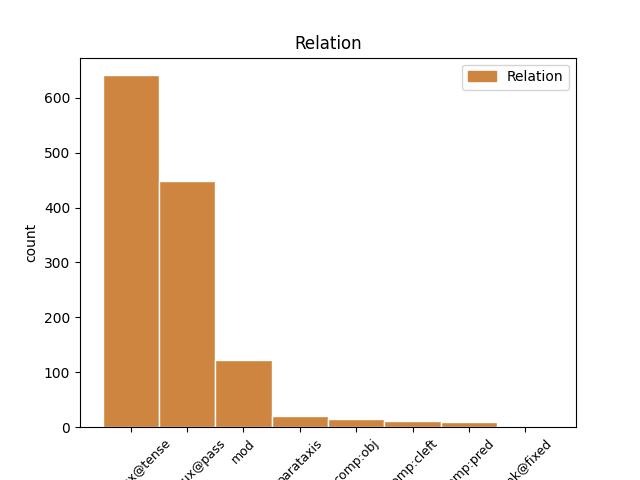
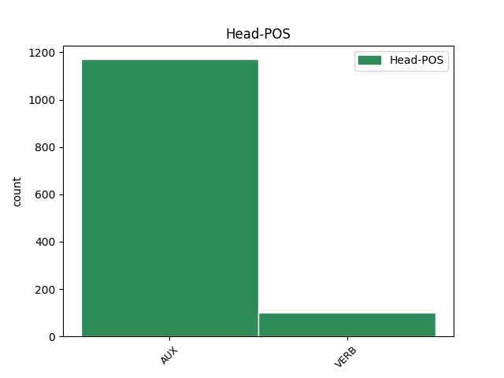
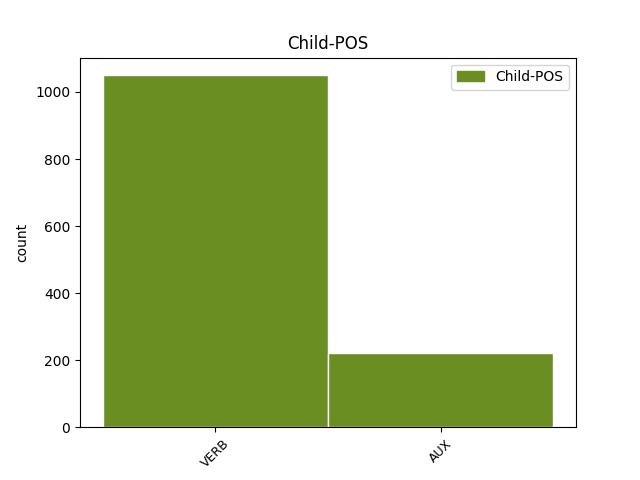

Distribution of features within this leaf



Agreement Rules sorted by frequency.
- When the dependent token is the complement for auxiliary(comp:aux@pass) of the head token, and the head token is AUX and the dependent token is VERB.
1 Le _ _ _ _ 0 _ _ _
2 " _ _ _ _ 0 _ _ _
3 scandale _ _ _ _ 0 _ _ _
4 de _ _ _ _ 0 _ _ _
5 les _ _ _ _ 0 _ _ _
6 piastres _ _ _ _ 0 _ _ _
7 " _ _ _ _ 0 _ _ _
8 fut être AUX _ Mood=Ind|Number=Sing|Person=3|Tense=Past|VerbForm=Fin 0 _ _ _
9 ramené ramener VERB _ Gender=Masc|Number=Sing|Tense=Past|VerbForm=Part|Voice=Pass 8 comp:aux@pass _ _
10 à _ _ _ _ 0 _ _ _
11 l' _ _ _ _ 0 _ _ _
12 état _ _ _ _ 0 _ _ _
13 de _ _ _ _ 0 _ _ _
14 détail _ _ _ _ 0 _ _ _
15 exotique _ _ _ _ 0 _ _ _
16 et _ _ _ _ 0 _ _ _
17 insignifiant _ _ _ _ 0 _ _ _
18 , _ _ _ _ 0 _ _ _
19 indigne _ _ _ _ 0 _ _ _
20 d' _ _ _ _ 0 _ _ _
21 être _ _ _ _ 0 _ _ _
22 mentionné _ _ _ _ 0 _ _ _
23 dans _ _ _ _ 0 _ _ _
24 les _ _ _ _ 0 _ _ _
25 manuels _ _ _ _ 0 _ _ _
26 d' _ _ _ _ 0 _ _ _
27 histoire _ _ _ _ 0 _ _ _
28 . _ _ _ _ 0 _ _ _
1 Cette _ _ _ _ 0 _ _ _
2 réponse _ _ _ _ 0 _ _ _
3 " _ _ _ _ 0 _ _ _
4 officielle _ _ _ _ 0 _ _ _
5 " _ _ _ _ 0 _ _ _
6 est être AUX _ Mood=Ind|Number=Sing|Person=3|Tense=Pres|VerbForm=Fin 0 _ _ _
7 bien _ _ _ _ 0 _ _ _
8 compréhensible _ _ _ _ 0 _ _ _
9 , _ _ _ _ 0 _ _ _
10 les _ _ _ _ 0 _ _ _
11 pouvoirs _ _ _ _ 0 _ _ _
12 politiques _ _ _ _ 0 _ _ _
13 préférant préférer VERB _ Tense=Pres|VerbForm=Part 6 mod _ _
14 éviter _ _ _ _ 0 _ _ _
15 de _ _ _ _ 0 _ _ _
16 susciter _ _ _ _ 0 _ _ _
17 de _ _ _ _ 0 _ _ _
18 nouvelles _ _ _ _ 0 _ _ _
19 vocations _ _ _ _ 0 _ _ _
20 de _ _ _ _ 0 _ _ _
21 preneurs _ _ _ _ 0 _ _ _
22 d' _ _ _ _ 0 _ _ _
23 otage _ _ _ _ 0 _ _ _
24 . _ _ _ _ 0 _ _ _
1 - _ _ _ _ 0 _ _ _
2 Décembre _ _ _ _ 0 _ _ _
3 1995 _ _ _ _ 0 _ _ _
4 : _ _ _ _ 0 _ _ _
5 deux _ _ _ _ 0 _ _ _
6 témoignages _ _ _ _ 0 _ _ _
7 ne _ _ _ _ 0 _ _ _
8 tenant tenir VERB _ Tense=Pres|VerbForm=Part 15 mod _ _
9 plus _ _ _ _ 0 _ _ _
10 , _ _ _ _ 0 _ _ _
11 le _ _ _ _ 0 _ _ _
12 juge _ _ _ _ 0 _ _ _
13 Éric _ _ _ _ 0 _ _ _
14 Halphen _ _ _ _ 0 _ _ _
15 accorde accorder VERB _ Mood=Ind|Number=Sing|Person=3|Tense=Pres|VerbForm=Fin 0 _ _ _
16 un _ _ _ _ 0 _ _ _
17 non-lieu _ _ _ _ 0 _ _ _
18 à _ _ _ _ 0 _ _ _
19 Michel _ _ _ _ 0 _ _ _
20 Roussin _ _ _ _ 0 _ _ _
21 . _ _ _ _ 0 _ _ _
1 René _ _ _ _ 0 _ _ _
2 Mayer _ _ _ _ 0 _ _ _
3 , _ _ _ _ 0 _ _ _
4 Président _ _ _ _ 0 _ _ _
5 de _ _ _ _ 0 _ _ _
6 le _ _ _ _ 0 _ _ _
7 Conseil _ _ _ _ 0 _ _ _
8 , _ _ _ _ 0 _ _ _
9 y _ _ _ _ 0 _ _ _
10 mit mettre VERB _ Mood=Ind|Number=Sing|Person=3|Tense=Past|VerbForm=Fin 0 _ _ _
11 fin _ _ _ _ 0 _ _ _
12 en _ _ _ _ 0 _ _ _
13 1953 _ _ _ _ 0 _ _ _
14 en _ _ _ _ 0 _ _ _
15 ramenant _ _ _ _ 0 _ _ _
16 le _ _ _ _ 0 _ _ _
17 taux _ _ _ _ 0 _ _ _
18 de _ _ _ _ 0 _ _ _
19 les _ _ _ _ 0 _ _ _
20 piastres _ _ _ _ 0 _ _ _
21 à _ _ _ _ 0 _ _ _
22 10 _ _ _ _ 0 _ _ _
23 francs _ _ _ _ 0 _ _ _
24 , _ _ _ _ 0 _ _ _
25 un _ _ _ _ 0 _ _ _
26 cours _ _ _ _ 0 _ _ _
27 plus _ _ _ _ 0 _ _ _
28 réaliste _ _ _ _ 0 _ _ _
29 , _ _ _ _ 0 _ _ _
30 mais _ _ _ _ 0 _ _ _
31 ce _ _ _ _ 0 _ _ _
32 en _ _ _ _ 0 _ _ _
33 violation _ _ _ _ 0 _ _ _
34 de _ _ _ _ 0 _ _ _
35 les _ _ _ _ 0 _ _ _
36 accords _ _ _ _ 0 _ _ _
37 de _ _ _ _ 0 _ _ _
38 le _ _ _ _ 0 _ _ _
39 8 _ _ _ _ 0 _ _ _
40 Mars _ _ _ _ 0 _ _ _
41 1949 _ _ _ _ 0 _ _ _
42 et _ _ _ _ 0 _ _ _
43 de _ _ _ _ 0 _ _ _
44 les _ _ _ _ 0 _ _ _
45 accords _ _ _ _ 0 _ _ _
46 de _ _ _ _ 0 _ _ _
47 Pau _ _ _ _ 0 _ _ _
48 de _ _ _ _ 0 _ _ _
49 1950 _ _ _ _ 0 _ _ _
50 ; _ _ _ _ 0 _ _ _
51 les _ _ _ _ 0 _ _ _
52 États _ _ _ _ 0 _ _ _
53 associés _ _ _ _ 0 _ _ _
54 de _ _ _ _ 0 _ _ _
55 le _ _ _ _ 0 _ _ _
56 Cambodge _ _ _ _ 0 _ _ _
57 , _ _ _ _ 0 _ _ _
58 Laos _ _ _ _ 0 _ _ _
59 et _ _ _ _ 0 _ _ _
60 Viêtnam _ _ _ _ 0 _ _ _
61 ne _ _ _ _ 0 _ _ _
62 furent être AUX _ Mood=Ind|Number=Plur|Person=3|Tense=Past|VerbForm=Fin 10 mod _ _
63 pas _ _ _ _ 0 _ _ _
64 consultés _ _ _ _ 0 _ _ _
65 . _ _ _ _ 0 _ _ _
1 Jean-Claude _ _ _ _ 0 _ _ _
2 Méry _ _ _ _ 0 _ _ _
3 , _ _ _ _ 0 _ _ _
4 expliquait expliquer VERB _ Mood=Ind|Number=Sing|Person=3|Tense=Imp|VerbForm=Fin 8 parataxis _ SpaceAfter=No
5 -il _ _ _ _ 0 _ _ _
6 , _ _ _ _ 0 _ _ _
7 lui _ _ _ _ 0 _ _ _
8 avait avoir AUX _ Mood=Ind|Number=Sing|Person=3|Tense=Imp|VerbForm=Fin 0 _ _ _
9 mis _ _ _ _ 0 _ _ _
10 " _ _ _ _ 0 _ _ _
11 le _ _ _ _ 0 _ _ _
12 couteau _ _ _ _ 0 _ _ _
13 sous _ _ _ _ 0 _ _ _
14 la _ _ _ _ 0 _ _ _
15 gorge _ _ _ _ 0 _ _ _
16 " _ _ _ _ 0 _ _ _
17 . _ _ _ _ 0 _ _ _
1 L' _ _ _ _ 0 _ _ _
2 enquête _ _ _ _ 0 _ _ _
3 sur _ _ _ _ 0 _ _ _
4 sa _ _ _ _ 0 _ _ _
5 mort _ _ _ _ 0 _ _ _
6 a avoir AUX _ Mood=Ind|Number=Sing|Person=3|Tense=Pres|VerbForm=Fin 0 _ _ _
7 été _ _ _ _ 0 _ _ _
8 classée _ _ _ _ 0 _ _ _
9 sans _ _ _ _ 0 _ _ _
10 suite _ _ _ _ 0 _ _ _
11 , _ _ _ _ 0 _ _ _
12 étant être AUX _ Tense=Pres|VerbForm=Part 6 mod _ _
13 considérée _ _ _ _ 0 _ _ _
14 comme _ _ _ _ 0 _ _ _
15 accidentelle _ _ _ _ 0 _ _ _
16 . _ _ _ _ 0 _ _ _
1 Certes _ _ _ _ 0 _ _ _
2 , _ _ _ _ 0 _ _ _
3 nous _ _ _ _ 0 _ _ _
4 savons _ _ _ _ 0 _ _ _
5 tous _ _ _ _ 0 _ _ _
6 que _ _ _ _ 0 _ _ _
7 ces _ _ _ _ 0 _ _ _
8 tests _ _ _ _ 0 _ _ _
9 ne _ _ _ _ 0 _ _ _
10 sont _ _ _ _ 0 _ _ _
11 pas _ _ _ _ 0 _ _ _
12 encore _ _ _ _ 0 _ _ _
13 à _ _ _ _ 0 _ _ _
14 le _ _ _ _ 0 _ _ _
15 point _ _ _ _ 0 _ _ _
16 sur _ _ _ _ 0 _ _ _
17 le _ _ _ _ 0 _ _ _
18 plan _ _ _ _ 0 _ _ _
19 scientifique _ _ _ _ 0 _ _ _
20 et _ _ _ _ 0 _ _ _
21 que _ _ _ _ 0 _ _ _
22 dans _ _ _ _ 0 _ _ _
23 le _ _ _ _ 0 _ _ _
24 cas _ _ _ _ 0 _ _ _
25 d' _ _ _ _ 0 _ _ _
26 une _ _ _ _ 0 _ _ _
27 application _ _ _ _ 0 _ _ _
28 de _ _ _ _ 0 _ _ _
29 ces _ _ _ _ 0 _ _ _
30 tests _ _ _ _ 0 _ _ _
31 , _ _ _ _ 0 _ _ _
32 nous _ _ _ _ 0 _ _ _
33 ne _ _ _ _ 0 _ _ _
34 savons savoir VERB _ Mood=Ind|Number=Plur|Person=1|Tense=Pres|VerbForm=Fin 0 _ _ _
35 pas _ _ _ _ 0 _ _ _
36 à _ _ _ _ 0 _ _ _
37 quel _ _ _ _ 0 _ _ _
38 stade _ _ _ _ 0 _ _ _
39 précis _ _ _ _ 0 _ _ _
40 de _ _ _ _ 0 _ _ _
41 la _ _ _ _ 0 _ _ _
42 maladie _ _ _ _ 0 _ _ _
43 intervient intervenir VERB _ Mood=Ind|Number=Sing|Person=3|Tense=Pres|VerbForm=Fin 34 comp:obj _ _
44 ou _ _ _ _ 0 _ _ _
45 non _ _ _ _ 0 _ _ _
46 une _ _ _ _ 0 _ _ _
47 contamination _ _ _ _ 0 _ _ _
48 . _ _ _ _ 0 _ _ _
1 C' _ _ _ _ 0 _ _ _
2 est être AUX _ Mood=Ind|Number=Sing|Person=3|Tense=Pres|VerbForm=Fin 0 _ _ _
3 lui _ _ _ _ 0 _ _ _
4 qui _ _ _ _ 0 _ _ _
5 aide aider VERB _ Mood=Ind|Number=Sing|Person=3|Tense=Pres|VerbForm=Fin 2 comp:cleft _ _
6 Francis _ _ _ _ 0 _ _ _
7 Poullain _ _ _ _ 0 _ _ _
8 , _ _ _ _ 0 _ _ _
9 grâce _ _ _ _ 0 _ _ _
10 à _ _ _ _ 0 _ _ _
11 le _ _ _ _ 0 _ _ _
12 produit _ _ _ _ 0 _ _ _
13 de _ _ _ _ 0 _ _ _
14 les _ _ _ _ 0 _ _ _
15 fausses _ _ _ _ 0 _ _ _
16 factures _ _ _ _ 0 _ _ _
17 , _ _ _ _ 0 _ _ _
18 à _ _ _ _ 0 _ _ _
19 obtenir _ _ _ _ 0 _ _ _
20 des _ _ _ _ 0 _ _ _
21 marchés _ _ _ _ 0 _ _ _
22 publics _ _ _ _ 0 _ _ _
23 tantôt _ _ _ _ 0 _ _ _
24 à _ _ _ _ 0 _ _ _
25 l' _ _ _ _ 0 _ _ _
26 office _ _ _ _ 0 _ _ _
27 HLM _ _ _ _ 0 _ _ _
28 de _ _ _ _ 0 _ _ _
29 Paris _ _ _ _ 0 _ _ _
30 , _ _ _ _ 0 _ _ _
31 tantôt _ _ _ _ 0 _ _ _
32 à _ _ _ _ 0 _ _ _
33 l' _ _ _ _ 0 _ _ _
34 office _ _ _ _ 0 _ _ _
35 HLM _ _ _ _ 0 _ _ _
36 de _ _ _ _ 0 _ _ _
37 les _ _ _ _ 0 _ _ _
38 Hauts-de-Seine _ _ _ _ 0 _ _ _
39 . _ _ _ _ 0 _ _ _
1 Les _ _ _ _ 0 _ _ _
2 événements _ _ _ _ 0 _ _ _
3 de _ _ _ _ 0 _ _ _
4 la _ _ _ _ 0 _ _ _
5 nuit _ _ _ _ 0 _ _ _
6 dernière _ _ _ _ 0 _ _ _
7 à _ _ _ _ 0 _ _ _
8 Copenhague _ _ _ _ 0 _ _ _
9 soulignent souligner VERB _ Mood=Ind|Number=Plur|Person=3|Tense=Pres|VerbForm=Fin 0 _ _ _
10 à _ _ _ _ 0 _ _ _
11 quel _ _ _ _ 0 _ _ _
12 point _ _ _ _ 0 _ _ _
13 il _ _ _ _ 0 _ _ _
14 est être AUX _ Mood=Ind|Number=Sing|Person=3|Tense=Pres|VerbForm=Fin 9 comp:obj _ _
15 important _ _ _ _ 0 _ _ _
16 que _ _ _ _ 0 _ _ _
17 le _ _ _ _ 0 _ _ _
18 Parlement _ _ _ _ 0 _ _ _
19 européen _ _ _ _ 0 _ _ _
20 tienne _ _ _ _ 0 _ _ _
21 ce _ _ _ _ 0 _ _ _
22 débat _ _ _ _ 0 _ _ _
23 , _ _ _ _ 0 _ _ _
24 comme _ _ _ _ 0 _ _ _
25 il _ _ _ _ 0 _ _ _
26 a _ _ _ _ 0 _ _ _
27 décidé _ _ _ _ 0 _ _ _
28 de _ _ _ _ 0 _ _ _
29 le _ _ _ _ 0 _ _ _
30 faire _ _ _ _ 0 _ _ _
31 plus _ _ _ _ 0 _ _ _
32 tôt _ _ _ _ 0 _ _ _
33 dans _ _ _ _ 0 _ _ _
34 la _ _ _ _ 0 _ _ _
35 semaine _ _ _ _ 0 _ _ _
36 . _ _ _ _ 0 _ _ _
1 D' _ _ _ _ 0 _ _ _
2 ailleurs _ _ _ _ 0 _ _ _
3 , _ _ _ _ 0 _ _ _
4 au-delà _ _ _ _ 0 _ _ _
5 de _ _ _ _ 0 _ _ _
6 le _ _ _ _ 0 _ _ _
7 don _ _ _ _ 0 _ _ _
8 de _ _ _ _ 0 _ _ _
9 les _ _ _ _ 0 _ _ _
10 diamants _ _ _ _ 0 _ _ _
11 , _ _ _ _ 0 _ _ _
12 c' _ _ _ _ 0 _ _ _
13 est être AUX _ Mood=Ind|Number=Sing|Person=3|Tense=Pres|VerbForm=Fin 0 _ _ _
14 l' _ _ _ _ 0 _ _ _
15 ensemble _ _ _ _ 0 _ _ _
16 de _ _ _ _ 0 _ _ _
17 le _ _ _ _ 0 _ _ _
18 mode _ _ _ _ 0 _ _ _
19 de _ _ _ _ 0 _ _ _
20 vie _ _ _ _ 0 _ _ _
21 de _ _ _ _ 0 _ _ _
22 le _ _ _ _ 0 _ _ _
23 Président _ _ _ _ 0 _ _ _
24 et _ _ _ _ 0 _ _ _
25 de _ _ _ _ 0 _ _ _
26 sa _ _ _ _ 0 _ _ _
27 famille _ _ _ _ 0 _ _ _
28 qui _ _ _ _ 0 _ _ _
29 est être AUX _ Mood=Ind|Number=Sing|Person=3|Tense=Pres|VerbForm=Fin 13 comp:cleft _ _
30 critiqué _ _ _ _ 0 _ _ _
31 . _ _ _ _ 0 _ _ _
1 " _ _ _ _ 0 _ _ _
2 À _ _ _ _ 0 _ _ _
3 cheval _ _ _ _ 0 _ _ _
4 sur _ _ _ _ 0 _ _ _
5 Taïwan _ _ _ _ 0 _ _ _
6 et _ _ _ _ 0 _ _ _
7 Pékin _ _ _ _ 0 _ _ _
8 " _ _ _ _ 0 _ _ _
9 , _ _ _ _ 0 _ _ _
10 ce _ _ _ _ 0 _ _ _
11 deuxième _ _ _ _ 0 _ _ _
12 réseau _ _ _ _ 0 _ _ _
13 " _ _ _ _ 0 _ _ _
14 ne _ _ _ _ 0 _ _ _
15 pouvait pouvoir VERB _ Mood=Ind|Number=Sing|Person=3|Tense=Imp|VerbForm=Fin 0 _ _ _
16 être _ _ _ _ 0 _ _ _
17 mis _ _ _ _ 0 _ _ _
18 en _ _ _ _ 0 _ _ _
19 oeuvre _ _ _ _ 0 _ _ _
20 que _ _ _ _ 0 _ _ _
21 de _ _ _ _ 0 _ _ _
22 manière _ _ _ _ 0 _ _ _
23 ponctuelle _ _ _ _ 0 _ _ _
24 et _ _ _ _ 0 _ _ _
25 discrète _ _ _ _ 0 _ _ _
26 " _ _ _ _ 0 _ _ _
27 , _ _ _ _ 0 _ _ _
28 notait noter VERB _ Mood=Ind|Number=Sing|Person=3|Tense=Imp|VerbForm=Fin 15 parataxis _ _
29 l' _ _ _ _ 0 _ _ _
30 ancien _ _ _ _ 0 _ _ _
31 directeur _ _ _ _ 0 _ _ _
32 général _ _ _ _ 0 _ _ _
33 de _ _ _ _ 0 _ _ _
34 Thomson-CSF _ _ _ _ 0 _ _ _
35 , _ _ _ _ 0 _ _ _
36 Jean-François _ _ _ _ 0 _ _ _
37 Briand _ _ _ _ 0 _ _ _
38 . _ _ _ _ 0 _ _ _
1 Après _ _ _ _ 0 _ _ _
2 une _ _ _ _ 0 _ _ _
3 enquête _ _ _ _ 0 _ _ _
4 rapide _ _ _ _ 0 _ _ _
5 , _ _ _ _ 0 _ _ _
6 le _ _ _ _ 0 _ _ _
7 23 _ _ _ _ 0 _ _ _
8 avril _ _ _ _ 0 _ _ _
9 1999 _ _ _ _ 0 _ _ _
10 , _ _ _ _ 0 _ _ _
11 certains _ _ _ _ 0 _ _ _
12 objets _ _ _ _ 0 _ _ _
13 appartenant _ _ _ _ 0 _ _ _
14 à _ _ _ _ 0 _ _ _
15 des _ _ _ _ 0 _ _ _
16 gendarmes _ _ _ _ 0 _ _ _
17 d' _ _ _ _ 0 _ _ _
18 Ajaccio _ _ _ _ 0 _ _ _
19 sont _ _ _ _ 0 _ _ _
20 trouvés trouver VERB _ Gender=Masc|Number=Plur|Tense=Past|VerbForm=Part|Voice=Pass 0 _ _ _
21 ensevelis ensevelir VERB _ Gender=Masc|Number=Plur|Tense=Past|VerbForm=Part 20 comp:pred _ _
22 dans _ _ _ _ 0 _ _ _
23 le _ _ _ _ 0 _ _ _
24 sable _ _ _ _ 0 _ _ _
25 non _ _ _ _ 0 _ _ _
26 loin _ _ _ _ 0 _ _ _
27 de _ _ _ _ 0 _ _ _
28 l' _ _ _ _ 0 _ _ _
29 incendie _ _ _ _ 0 _ _ _
30 de _ _ _ _ 0 _ _ _
31 la _ _ _ _ 0 _ _ _
32 paillote _ _ _ _ 0 _ _ _
33 Chez _ _ _ _ 0 _ _ _
34 Francis _ _ _ _ 0 _ _ _
35 . _ _ _ _ 0 _ _ _
1 " _ _ _ _ 0 _ _ _
2 J' _ _ _ _ 0 _ _ _
3 ai avoir AUX _ Mood=Ind|Number=Sing|Person=1|Tense=Pres|VerbForm=Fin 0 _ _ _
4 signé _ _ _ _ 0 _ _ _
5 , _ _ _ _ 0 _ _ _
6 comme _ _ _ _ 0 _ _ _
7 ministre _ _ _ _ 0 _ _ _
8 chargé _ _ _ _ 0 _ _ _
9 de _ _ _ _ 0 _ _ _
10 l' _ _ _ _ 0 _ _ _
11 administration _ _ _ _ 0 _ _ _
12 de _ _ _ _ 0 _ _ _
13 les _ _ _ _ 0 _ _ _
14 douanes _ _ _ _ 0 _ _ _
15 et _ _ _ _ 0 _ _ _
16 de _ _ _ _ 0 _ _ _
17 les _ _ _ _ 0 _ _ _
18 impôts _ _ _ _ 0 _ _ _
19 , _ _ _ _ 0 _ _ _
20 la _ _ _ _ 0 _ _ _
21 commission _ _ _ _ 0 _ _ _
22 douanière _ _ _ _ 0 _ _ _
23 , _ _ _ _ 0 _ _ _
24 ce _ _ _ _ 0 _ _ _
25 qu' _ _ _ _ 0 _ _ _
26 on _ _ _ _ 0 _ _ _
27 appelle _ _ _ _ 0 _ _ _
28 les _ _ _ _ 0 _ _ _
29 frais _ _ _ _ 0 _ _ _
30 de _ _ _ _ 0 _ _ _
31 prospection _ _ _ _ 0 _ _ _
32 de _ _ _ _ 0 _ _ _
33 marché _ _ _ _ 0 _ _ _
34 , _ _ _ _ 0 _ _ _
35 qui _ _ _ _ 0 _ _ _
36 a _ _ _ _ 0 _ _ _
37 été _ _ _ _ 0 _ _ _
38 allouée _ _ _ _ 0 _ _ _
39 à _ _ _ _ 0 _ _ _
40 les _ _ _ _ 0 _ _ _
41 intermédiaires _ _ _ _ 0 _ _ _
42 étrangers _ _ _ _ 0 _ _ _
43 qui _ _ _ _ 0 _ _ _
44 ont _ _ _ _ 0 _ _ _
45 facilité _ _ _ _ 0 _ _ _
46 l' _ _ _ _ 0 _ _ _
47 acquisition _ _ _ _ 0 _ _ _
48 de _ _ _ _ 0 _ _ _
49 les _ _ _ _ 0 _ _ _
50 frégates _ _ _ _ 0 _ _ _
51 de _ _ _ _ 0 _ _ _
52 Taïwan _ _ _ _ 0 _ _ _
53 " _ _ _ _ 0 _ _ _
54 , _ _ _ _ 0 _ _ _
55 a avoir AUX _ Mood=Ind|Number=Sing|Person=3|Tense=Pres|VerbForm=Fin 3 parataxis _ _
56 expliqué _ _ _ _ 0 _ _ _
57 Michel _ _ _ _ 0 _ _ _
58 Charasse _ _ _ _ 0 _ _ _
59 . _ _ _ _ 0 _ _ _
1 Les _ _ _ _ 0 _ _ _
2 travaux _ _ _ _ 0 _ _ _
3 de _ _ _ _ 0 _ _ _
4 la _ _ _ _ 0 _ _ _
5 table _ _ _ _ 0 _ _ _
6 ronde _ _ _ _ 0 _ _ _
7 ivoirienne _ _ _ _ 0 _ _ _
8 suivent suivre VERB _ Mood=Ind|Number=Plur|Person=3|Tense=Pres|VerbForm=Fin 0 _ _ _
9 le _ _ _ _ 0 _ _ _
10 calendrier _ _ _ _ 0 _ _ _
11 prévu _ _ _ _ 0 _ _ _
12 et _ _ _ _ 0 _ _ _
13 pourraient _ _ _ _ 0 _ _ _
14 se _ _ _ _ 0 _ _ _
15 terminer _ _ _ _ 0 _ _ _
16 avant _ _ _ _ 0 _ _ _
17 la _ _ _ _ 0 _ _ _
18 date _ _ _ _ 0 _ _ _
19 butoir _ _ _ _ 0 _ _ _
20 de _ _ _ _ 0 _ _ _
21 le _ _ _ _ 0 _ _ _
22 24 _ _ _ _ 0 _ _ _
23 janvier _ _ _ _ 0 _ _ _
24 , _ _ _ _ 0 _ _ _
25 a avoir AUX _ Mood=Ind|Number=Sing|Person=3|Tense=Pres|VerbForm=Fin 8 parataxis _ _
26 indiqué _ _ _ _ 0 _ _ _
27 le _ _ _ _ 0 _ _ _
28 porte-parole _ _ _ _ 0 _ _ _
29 de _ _ _ _ 0 _ _ _
30 le _ _ _ _ 0 _ _ _
31 Quai _ _ _ _ 0 _ _ _
32 d' _ _ _ _ 0 _ _ _
33 Orsay _ _ _ _ 0 _ _ _
34 . _ _ _ _ 0 _ _ _
1 En _ _ _ _ 0 _ _ _
2 octobre _ _ _ _ 0 _ _ _
3 1979 _ _ _ _ 0 _ _ _
4 , _ _ _ _ 0 _ _ _
5 un _ _ _ _ 0 _ _ _
6 mois _ _ _ _ 0 _ _ _
7 après _ _ _ _ 0 _ _ _
8 que _ _ _ _ 0 _ _ _
9 le _ _ _ _ 0 _ _ _
10 despote _ _ _ _ 0 _ _ _
11 africain _ _ _ _ 0 _ _ _
12 eut avoir AUX _ Mood=Ind|Number=Sing|Person=3|Tense=Past|VerbForm=Fin 0 _ _ _
13 été être AUX _ Tense=Past|VerbForm=Part 12 comp:aux@tense _ _
14 renversé _ _ _ _ 0 _ _ _
15 , _ _ _ _ 0 _ _ _
16 Le _ _ _ _ 0 _ _ _
17 Canard _ _ _ _ 0 _ _ _
18 enchaîné _ _ _ _ 0 _ _ _
19 titre _ _ _ _ 0 _ _ _
20 sur _ _ _ _ 0 _ _ _
21 les _ _ _ _ 0 _ _ _
22 diamants _ _ _ _ 0 _ _ _
23 remis _ _ _ _ 0 _ _ _
24 par _ _ _ _ 0 _ _ _
25 Bokassa _ _ _ _ 0 _ _ _
26 ( _ _ _ _ 0 _ _ _
27 en _ _ _ _ 0 _ _ _
28 exil _ _ _ _ 0 _ _ _
29 en _ _ _ _ 0 _ _ _
30 Côte _ _ _ _ 0 _ _ _
31 d' _ _ _ _ 0 _ _ _
32 Ivoire _ _ _ _ 0 _ _ _
33 ) _ _ _ _ 0 _ _ _
34 qu' _ _ _ _ 0 _ _ _
35 il _ _ _ _ 0 _ _ _
36 évalue _ _ _ _ 0 _ _ _
37 à _ _ _ _ 0 _ _ _
38 un _ _ _ _ 0 _ _ _
39 million _ _ _ _ 0 _ _ _
40 de _ _ _ _ 0 _ _ _
41 francs _ _ _ _ 0 _ _ _
42 ( _ _ _ _ 0 _ _ _
43 selon _ _ _ _ 0 _ _ _
44 M. _ _ _ _ 0 _ _ _
45 Copperman _ _ _ _ 0 _ _ _
46 , _ _ _ _ 0 _ _ _
47 cette _ _ _ _ 0 _ _ _
48 valeur _ _ _ _ 0 _ _ _
49 était _ _ _ _ 0 _ _ _
50 pourtant _ _ _ _ 0 _ _ _
51 supérieure _ _ _ _ 0 _ _ _
52 à _ _ _ _ 0 _ _ _
53 la _ _ _ _ 0 _ _ _
54 valeur _ _ _ _ 0 _ _ _
55 totale _ _ _ _ 0 _ _ _
56 de _ _ _ _ 0 _ _ _
57 le _ _ _ _ 0 _ _ _
58 stock _ _ _ _ 0 _ _ _
59 de _ _ _ _ 0 _ _ _
60 diamants _ _ _ _ 0 _ _ _
61 polis _ _ _ _ 0 _ _ _
62 détenu _ _ _ _ 0 _ _ _
63 par _ _ _ _ 0 _ _ _
64 la _ _ _ _ 0 _ _ _
65 CND _ _ _ _ 0 _ _ _
66 , _ _ _ _ 0 _ _ _
67 seul _ _ _ _ 0 _ _ _
68 producteur _ _ _ _ 0 _ _ _
69 de _ _ _ _ 0 _ _ _
70 diamants _ _ _ _ 0 _ _ _
71 polis _ _ _ _ 0 _ _ _
72 et _ _ _ _ 0 _ _ _
73 taillés _ _ _ _ 0 _ _ _
74 en _ _ _ _ 0 _ _ _
75 Centrafrique _ _ _ _ 0 _ _ _
76 ) _ _ _ _ 0 _ _ _
77 . _ _ _ _ 0 _ _ _
Disagree Examples:
1 Le _ _ _ _ 0 _ _ _
2 maire _ _ _ _ 0 _ _ _
3 a avoir AUX _ Mood=Ind|Number=Sing|Person=3|Tense=Pres|VerbForm=Fin 0 _ _ _
4 invité inviter VERB _ Gender=Masc|Number=Sing|Tense=Past|VerbForm=Part 3 comp:aux@tense _ _
5 les _ _ _ _ 0 _ _ _
6 membres _ _ _ _ 0 _ _ _
7 de _ _ _ _ 0 _ _ _
8 le _ _ _ _ 0 _ _ _
9 conseil _ _ _ _ 0 _ _ _
10 à _ _ _ _ 0 _ _ _
11 élaborer _ _ _ _ 0 _ _ _
12 le _ _ _ _ 0 _ _ _
13 programme _ _ _ _ 0 _ _ _
14 d' _ _ _ _ 0 _ _ _
15 amélioration _ _ _ _ 0 _ _ _
16 de _ _ _ _ 0 _ _ _
17 la _ _ _ _ 0 _ _ _
18 voirie _ _ _ _ 0 _ _ _
19 communale _ _ _ _ 0 _ _ _
20 et _ _ _ _ 0 _ _ _
21 de _ _ _ _ 0 _ _ _
22 la _ _ _ _ 0 _ _ _
23 sécurité _ _ _ _ 0 _ _ _
24 routière _ _ _ _ 0 _ _ _
25 pour _ _ _ _ 0 _ _ _
26 l' _ _ _ _ 0 _ _ _
27 année _ _ _ _ 0 _ _ _
28 1999 _ _ _ _ 0 _ _ _
29 . _ _ _ _ 0 _ _ _
1 Il _ _ _ _ 0 _ _ _
2 a avoir AUX _ Mood=Ind|Number=Sing|Person=3|Tense=Pres|VerbForm=Fin 0 _ _ _
3 rappelé rappeler VERB _ Gender=Masc|Number=Sing|Tense=Past|VerbForm=Part 2 comp:aux@tense _ _
4 que _ _ _ _ 0 _ _ _
5 plusieurs _ _ _ _ 0 _ _ _
6 automobilistes _ _ _ _ 0 _ _ _
7 ont _ _ _ _ 0 _ _ _
8 quitté _ _ _ _ 0 _ _ _
9 la _ _ _ _ 0 _ _ _
10 chaussée _ _ _ _ 0 _ _ _
11 à _ _ _ _ 0 _ _ _
12 l' _ _ _ _ 0 _ _ _
13 intersection _ _ _ _ 0 _ _ _
14 de _ _ _ _ 0 _ _ _
15 la _ _ _ _ 0 _ _ _
16 RD192 _ _ _ _ 0 _ _ _
17 et _ _ _ _ 0 _ _ _
18 de _ _ _ _ 0 _ _ _
19 le _ _ _ _ 0 _ _ _
20 chemin _ _ _ _ 0 _ _ _
21 rural _ _ _ _ 0 _ _ _
22 de _ _ _ _ 0 _ _ _
23 la _ _ _ _ 0 _ _ _
24 Vaux _ _ _ _ 0 _ _ _
25 de _ _ _ _ 0 _ _ _
26 les _ _ _ _ 0 _ _ _
27 Fossés _ _ _ _ 0 _ _ _
28 et _ _ _ _ 0 _ _ _
29 qu' _ _ _ _ 0 _ _ _
30 il _ _ _ _ 0 _ _ _
31 convient _ _ _ _ 0 _ _ _
32 de _ _ _ _ 0 _ _ _
33 modifier _ _ _ _ 0 _ _ _
34 le _ _ _ _ 0 _ _ _
35 régime _ _ _ _ 0 _ _ _
36 de _ _ _ _ 0 _ _ _
37 priorité _ _ _ _ 0 _ _ _
38 à _ _ _ _ 0 _ _ _
39 cet _ _ _ _ 0 _ _ _
40 endroit _ _ _ _ 0 _ _ _
41 . _ _ _ _ 0 _ _ _
1 Il _ _ _ _ 0 _ _ _
2 a _ _ _ _ 0 _ _ _
3 rappelé _ _ _ _ 0 _ _ _
4 que _ _ _ _ 0 _ _ _
5 plusieurs _ _ _ _ 0 _ _ _
6 automobilistes _ _ _ _ 0 _ _ _
7 ont avoir AUX _ Mood=Ind|Number=Plur|Person=3|Tense=Pres|VerbForm=Fin 0 _ _ _
8 quitté quitter VERB _ Gender=Masc|Number=Sing|Tense=Past|VerbForm=Part 7 comp:aux@tense _ _
9 la _ _ _ _ 0 _ _ _
10 chaussée _ _ _ _ 0 _ _ _
11 à _ _ _ _ 0 _ _ _
12 l' _ _ _ _ 0 _ _ _
13 intersection _ _ _ _ 0 _ _ _
14 de _ _ _ _ 0 _ _ _
15 la _ _ _ _ 0 _ _ _
16 RD192 _ _ _ _ 0 _ _ _
17 et _ _ _ _ 0 _ _ _
18 de _ _ _ _ 0 _ _ _
19 le _ _ _ _ 0 _ _ _
20 chemin _ _ _ _ 0 _ _ _
21 rural _ _ _ _ 0 _ _ _
22 de _ _ _ _ 0 _ _ _
23 la _ _ _ _ 0 _ _ _
24 Vaux _ _ _ _ 0 _ _ _
25 de _ _ _ _ 0 _ _ _
26 les _ _ _ _ 0 _ _ _
27 Fossés _ _ _ _ 0 _ _ _
28 et _ _ _ _ 0 _ _ _
29 qu' _ _ _ _ 0 _ _ _
30 il _ _ _ _ 0 _ _ _
31 convient _ _ _ _ 0 _ _ _
32 de _ _ _ _ 0 _ _ _
33 modifier _ _ _ _ 0 _ _ _
34 le _ _ _ _ 0 _ _ _
35 régime _ _ _ _ 0 _ _ _
36 de _ _ _ _ 0 _ _ _
37 priorité _ _ _ _ 0 _ _ _
38 à _ _ _ _ 0 _ _ _
39 cet _ _ _ _ 0 _ _ _
40 endroit _ _ _ _ 0 _ _ _
41 . _ _ _ _ 0 _ _ _
1 " _ _ _ _ 0 _ _ _
2 Tout _ _ _ _ 0 _ _ _
3 simplement _ _ _ _ 0 _ _ _
4 " _ _ _ _ 0 _ _ _
5 , _ _ _ _ 0 _ _ _
6 a avoir AUX _ Mood=Ind|Number=Sing|Person=3|Tense=Pres|VerbForm=Fin 0 _ _ _
7 précisé préciser VERB _ Gender=Masc|Number=Sing|Tense=Past|VerbForm=Part 6 comp:aux@tense _ _
8 Roger _ _ _ _ 0 _ _ _
9 Thiriot _ _ _ _ 0 _ _ _
10 , _ _ _ _ 0 _ _ _
11 " _ _ _ _ 0 _ _ _
12 parce _ _ _ _ 0 _ _ _
13 que _ _ _ _ 0 _ _ _
14 l' _ _ _ _ 0 _ _ _
15 histoire _ _ _ _ 0 _ _ _
16 de _ _ _ _ 0 _ _ _
17 le _ _ _ _ 0 _ _ _
18 travail _ _ _ _ 0 _ _ _
19 industriel _ _ _ _ 0 _ _ _
20 est _ _ _ _ 0 _ _ _
21 , _ _ _ _ 0 _ _ _
22 ici _ _ _ _ 0 _ _ _
23 , _ _ _ _ 0 _ _ _
24 une _ _ _ _ 0 _ _ _
25 longue _ _ _ _ 0 _ _ _
26 et _ _ _ _ 0 _ _ _
27 vieille _ _ _ _ 0 _ _ _
28 histoire _ _ _ _ 0 _ _ _
29 . _ _ _ _ 0 _ _ _
1 La _ _ _ _ 0 _ _ _
2 présence _ _ _ _ 0 _ _ _
3 d' _ _ _ _ 0 _ _ _
4 une _ _ _ _ 0 _ _ _
5 abondante _ _ _ _ 0 _ _ _
6 forêt _ _ _ _ 0 _ _ _
7 , _ _ _ _ 0 _ _ _
8 fournissant _ _ _ _ 0 _ _ _
9 l' _ _ _ _ 0 _ _ _
10 indispensable _ _ _ _ 0 _ _ _
11 combustible _ _ _ _ 0 _ _ _
12 , _ _ _ _ 0 _ _ _
13 liée _ _ _ _ 0 _ _ _
14 à _ _ _ _ 0 _ _ _
15 l' _ _ _ _ 0 _ _ _
16 existence _ _ _ _ 0 _ _ _
17 de _ _ _ _ 0 _ _ _
18 le _ _ _ _ 0 _ _ _
19 minerai _ _ _ _ 0 _ _ _
20 de _ _ _ _ 0 _ _ _
21 fer _ _ _ _ 0 _ _ _
22 exploitable _ _ _ _ 0 _ _ _
23 à _ _ _ _ 0 _ _ _
24 ciel _ _ _ _ 0 _ _ _
25 ouvert _ _ _ _ 0 _ _ _
26 , _ _ _ _ 0 _ _ _
27 a avoir AUX _ Mood=Ind|Number=Sing|Person=3|Tense=Pres|VerbForm=Fin 0 _ _ _
28 incité inciter VERB _ Gender=Masc|Number=Sing|Tense=Past|VerbForm=Part 27 comp:aux@tense _ _
29 les _ _ _ _ 0 _ _ _
30 hommes _ _ _ _ 0 _ _ _
31 à _ _ _ _ 0 _ _ _
32 créer _ _ _ _ 0 _ _ _
33 " _ _ _ _ 0 _ _ _
34 . _ _ _ _ 0 _ _ _